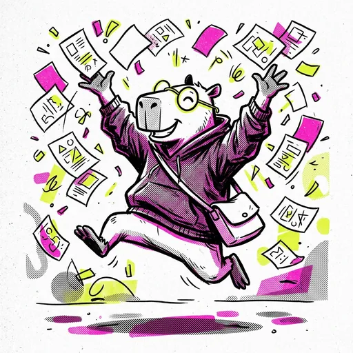

ESTADO DE CARGA (SKELETON FANZINE)


No quedan materias pendientes en el camino. Prepará el birrete y el mate para el título.
No pudimos conectar con el backend o la carrera seleccionada no tiene materias configuradas.